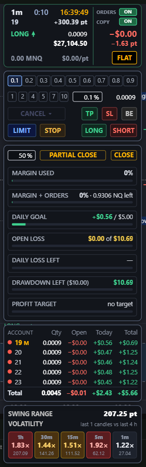

The chart cards, part by part
A real screenshot of the cards on the right of Vest's chart. Click a part, or use the left and right arrow keys, to see what it does.

Click a part of the screenshot
Every button, number and bar has an explanation here. The list at the bottom of the page has them all.
The screenshot was taken on a small real account with the copier on five accounts. Your numbers will differ. The cards are only information and buttons: nothing on this page sends anything.